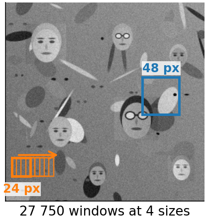
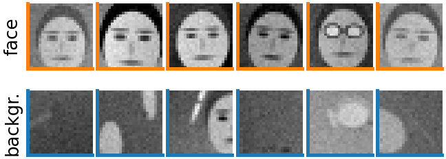
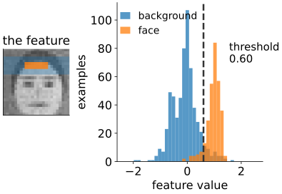
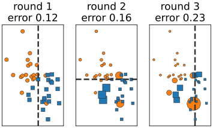
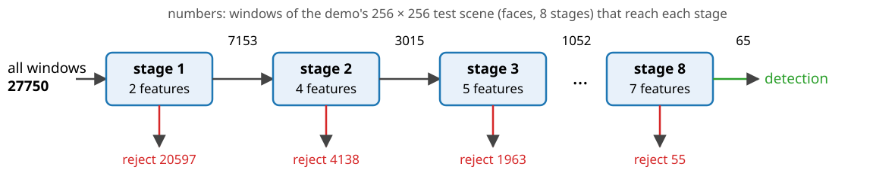
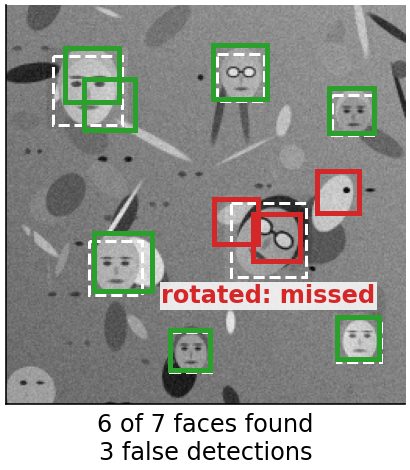

In 2001, Viola and Jones showed real-time face detection on an ordinary desktop computer. Three ideas, each worth a large factor:
Integral image: every rectangle feature costs a few lookups (units 1–3).
Boosting: out of about 160 000 features, choose a few hundred, one at a time, each time focusing on the examples still classified wrongly.
Attentional cascade: reject almost all background windows after one or two features; spend effort only on the promising ones.
We build such a detector for cartoon faces and for cells.
Slides titled The math give the formulas and proofs; the ideas are complete without them.
The detection task
Slide a 24 \times 24window over every position and every scale of the image; for each window decide: face or not?
A 384 \times 288 image, scales growing by 1.25: about 670 000 windows.
Almost all are background; a few dozen overlap the faces.
So the detector must be very fast on background, and its false-positive rate per window must be tiny: 1 in 10^5 still gives several false detections per image.
Scales without an image pyramid: instead of shrinking the image, enlarge the features. With the integral image a rectangle of any size costs the same, so every scale costs the same. Each window is normalised by its own standard deviation (two tables, unit 2).

Recall: classifiers, training and test
From the random forests day:
A classifier maps a feature vector to a label (here: face or background).
It is learnt from a training set of labelled examples and judged on a separate test set; its error rate is the fraction it gets wrong.
The training error alone is too optimistic (overfitting).
For a detector, two rates matter: the detection rate (faces found / faces present) and the false-positive rate (background windows called face / background windows).

The weak classifier: a decision stump
One feature, one threshold, one direction:
h(\text{window}) = \begin{cases} \text{face} & \text{if the feature value is above (or below) the threshold} \\ \text{background} & \text{otherwise} \end{cases}
It is a decision tree of depth 1; the random forests day grows full trees from the same split search.
The best stump for a feature: sort the examples by feature value and try every threshold between neighbours.
Alone, a stump is weak: in our demo the first stump chosen has a weighted error of 6.9 %, the tenth 18.7 % (on the reweighted examples). But it is always better than guessing.

Boosting: many weak votes
AdaBoost (Freund & Schapire, 1997), as a picture:
Give every training example the same weight.
Pick the stump with the smallest weighted error.
Increase the weight of the examples it got wrong, decrease the others. The next stump must focus on them.
Repeat. The final classifier is a weighted vote of all stumps: good stumps get a larger vote.

Toy example: two features, dot area = weight, dashed: the stump of that round.
Each round picks one feature: feature selection falls out. Of 160 000 features, a few hundred are ever used.
Viola and Jones’ first two features on real faces: “the eye region is darker than the cheeks” and “the eyes are darker than the bridge of the nose”: the two templates you tried in the last unit.
Try it: boosting, one stump at a time
The math: AdaBoost
Labels y_i = \pm 1, weights w_i = 1/n. For rounds t = 1, \dots, T:
choose the stump h_t with the smallest weighted error \varepsilon_t = \sum_i w_i\,[h_t(x_i) \ne y_i];
reweight w_i \leftarrow w_i\, e^{-\alpha_t y_i h_t(x_i)} (wrong: \times e^{\alpha_t}, right: \times e^{-\alpha_t}), then divide by the sum.
Final classifier: H(x) = \operatorname{sign}\big(\sum_t \alpha_t h_t(x)\big).
After reweighting, the stump just chosen has weighted error exactly \tfrac12: the next round cannot pick the same information again.
Training error bound: \frac1n\#\{i : H(x_i) \ne y_i\} \le \prod_t 2\sqrt{\varepsilon_t(1 - \varepsilon_t)}. Each factor is < 1 when \varepsilon_t < \tfrac12, so the training error falls exponentially fast.
The math: the best threshold in one pass
For one feature, sort the n examples by value. With the threshold below all of them, every example is called positive: the error is the total weight of the negatives, E_0. Moving the threshold past example i (in sorted order) changes the error by +w_i if y_i = +1 and -w_i if y_i = -1: E_k = E_0 + \sum_{j \le k} y_{(j)} w_{(j)}. A prefix sum again. The opposite direction has error 1 - E_k. Sorting is done once per feature; each round costs one pass over n values per feature: O(\text{features} \times n).
Why \alpha_t: AdaBoost minimises the exponential loss \sum_i e^{-y_i F(x_i)}, F = \sum_t \alpha_t h_t, one term at a time; setting the derivative in \alpha_t to zero gives e^{2\alpha_t} = (1 - \varepsilon_t)/\varepsilon_t.
The attentional cascade

A sequence of stages, each a small boosted classifier, tuned to keep almost all faces (detection about 99.5 %) and reject a fair share of background (about half or more).
A window is rejected at the first stage that says no. Only promising windows reach the expensive later stages.
Each stage is trained on the background windows that got through the earlier stages: harder and harder negatives.
On average only a few features are evaluated per window.
The math: cascade rates
Stage i has detection rate d_i and false-positive rate f_i (on windows that reach it), and uses n_i features. A window must pass every stage, so D = \prod_i d_i, \qquad F = \prod_i f_i. Ten stages with d_i = 0.99, f_i = 0.3: D = 0.904, F = 5.9 \cdot 10^{-6}.
Expected features per background window, with p_j the pass rate of stage j: \bar n = n_1 + n_2 p_1 + n_3 p_1 p_2 + \dots = \sum_i n_i \prod_{j < i} p_j. The first stages dominate: make them tiny.
Try it: a cascade
Try it: detection
Why it worked, and what fails
Three factors: cheap features (integral image), few features (boosting), few windows get many features (cascade). Overlapping detections of the same face are merged.
Rotation and profile: features are axis-aligned; a turned face is a different pattern. Fixes: rotated (45°) features, or separate detectors per pose.
Occlusion: a hand or a scarf breaks the rectangles the stumps rely on.
The training set decides who is detected. Faces unlike those in the training set (other skin tones, glasses, headscarves, ages) are detected less reliably. In our demo: train without glasses, and faces with glasses are missed.
Matching detections to the truth, precision and recall, average precision: the evaluation day.

Beyond faces
The same detector, trained on other patches: cells, nuclei, mitoses in microscopy, pedestrians, number plates.
Modern detectors learn their features with convolutional networks (neural networks day, modern deep learning day). They are more accurate, but need much more computation and data.
The ideas live on: cascades (reject the easy cases cheaply), boosting (gradient-boosted trees are among the strongest classifiers on tabular data), and integral images wherever computation is tiny (cameras, embedded devices).
Summary
Detection = classify hundreds of thousands of windows; almost all are background.
A stump (one feature, one threshold) is a weak classifier; AdaBoost reweights the examples so that each new stump fixes the old mistakes, and adds them as a weighted vote. It selects a few features from a huge pool.
The cascade rejects most windows after a few features: D = \prod d_i, F = \prod f_i; each stage trains on the background that got through.
Scale the features, not the image; normalise each window by its standard deviation.